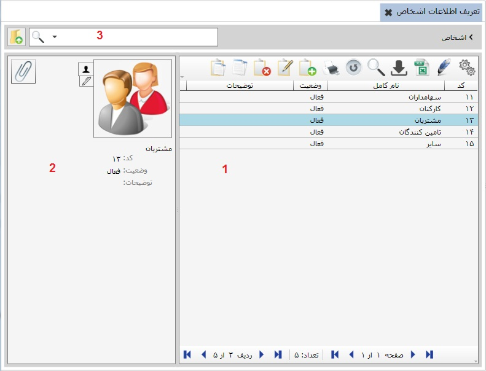
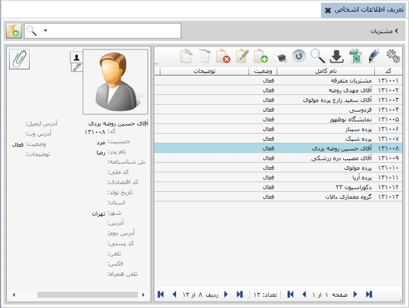
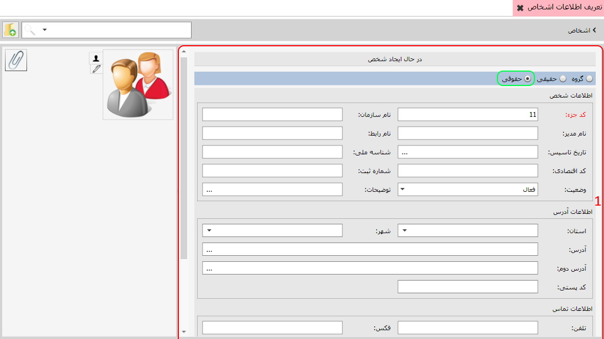
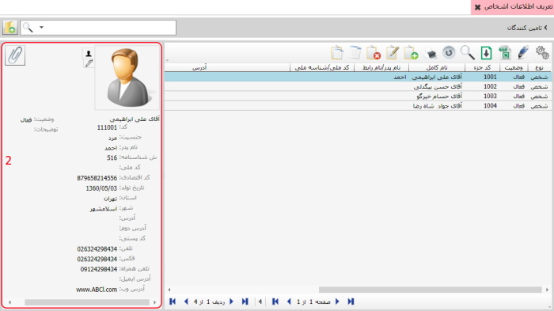
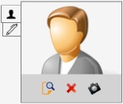
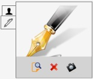
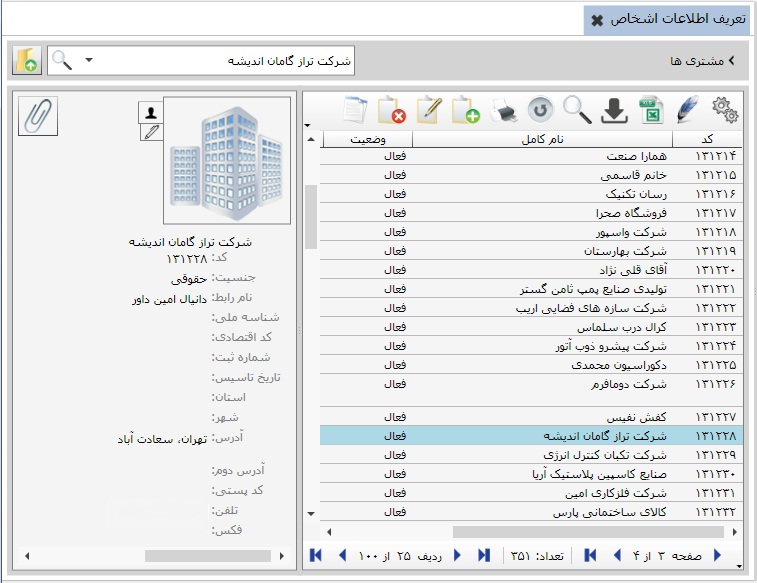

این امکان برای شما مهیا شده اطلاعات مربوط به اشخاصی که با آنها در ارتباط هستید اعم از پرسنل، مشتریان، سهام داران، تامین کنندگان و سایر را وارد نمایید، باید توجه داشته باشید اطلاعاتی که در این قسمت وارد می کنید در سیستم های دیگر مورد استفاده شما قرار می گیرند.
با کلیک روی گزینه ی تعریف اطلاعات اشخاص صفحه ی زیر نمایان خواهد شد.

همان طور که مشاهده می کنید این صفحه دارای سه بخش می باشد
موارد کاربرد هر بخش به شرح زیر است:
کادر شماره 1:
این جدول امکان گروه بندی و ایجاد اشخاص حقیقی و حقوقی را به شما می دهد.
برای گروه بندی یا ایجاد اشخاص گزینه اضافه یا (F8) را بزنید ،
تصویر زیر نمایان خواهد شد
همان طور که در تصویر بالا مشاهده می کنید
در کادر سبز رنگ سه گزینه وجود دارد
گزینه ی اول گزینه ی ایجاد گروه می باشد
این گزینه امکان گروه بندی اشخاص را به شما می دهد
برای ایجاد یک گروه کافیست اطلاعات مربوط به گروه مورد نظر را تکمیل کرده
و گزینه ی تایید را بزنید،
توجه داشته باشید که شما در داخل هر گروه می توانید
یک گروه دیگر و یا اشخاص حقیقی و حقوقی تعریف کنید،
برای ایجاد شخص یا گروه در یک گروه دیگر
روی گروه مورد نظر دوبار کلیک کنید،
پس از آن با استفاده از کلید اضافه یا همان F8 گروه یا شخص مورد نظر را تعریف کنید.
مطابق شکل زیر گزینه ی دوم گزینه ی ایجاد شخص حقیقی می باشد:

برای تعریف یک شخصیت حقیقی کافیست اطلاعات مربوط به آن را در فرم بالا تکمیل نمایید
و گزینه ی تایید را بزنید .
مطابق شکل زیر گزینه ی سوم گزینه ی ایجاد شخص حقوقی می باشد:

برای تعریف یک شخصیت حقوقی نیز
اطلاعات مربوط به آن را در فرم بالا تکمیل کنید
و گزینه ی تایید را بزنید
توجه داشته باشید فیلد هایی که به رنگ قرمز هستند
حتما باید تکمیل شوند
اما الزامی برای تکمیل فیلد های دیگر وجود ندارد.
کادر شماره 2: این کادر را در شکل زیر مشاهده می کنید. زمانی که نام شخصی را از جدول سمت راست انتخاب کنید، جزئیات اطلاعات مورد انتخاب شده در کادر شماره 2 نمایش داده میشود.


در این قسمت می توانید برای شخص تصویر مخصوص انتخاب کنید.
همچنین از طریق گزینه های موجود در پایین تصویر می توانید تصویر را حذف و مشاهده نمایید.

در این قسمت می توانید برای اشخاص حقیقی و حقوقی امضا یا مهر در صفحه اطلاعات اشخاص بارگزاری کنید.
برای این کار از گزینه های شکل بالا استفاده نمایید.
ضمیمه کردن فایل ها: با استفاده از این گزینه می توان اسناد و یا فایل هایی را ضمیمه اطلاعات اشخاص کرد.
کادر شماره 3: این کادر برای جستجوی اشخاص به کار می رود با وارد کردن نام و یا کد اشخاص در کادر جستجو، به سرعت به جزئیات اطلاعات اشخاص دسترسی خواهید داشت توجه داشته باشید در نتیجه جستجو، اطلاعات شخص هم در جدول سمت راست و هم در کادر سمت چپ نمایش داده خواهد شد.
